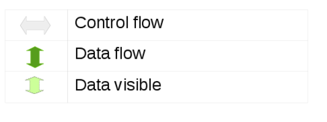
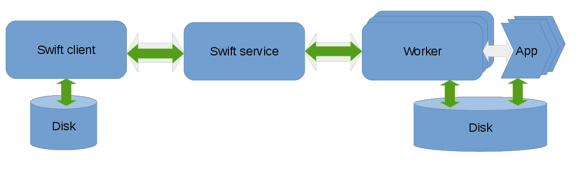
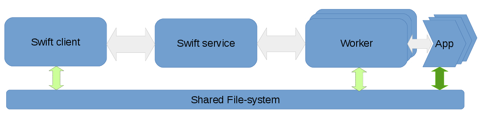
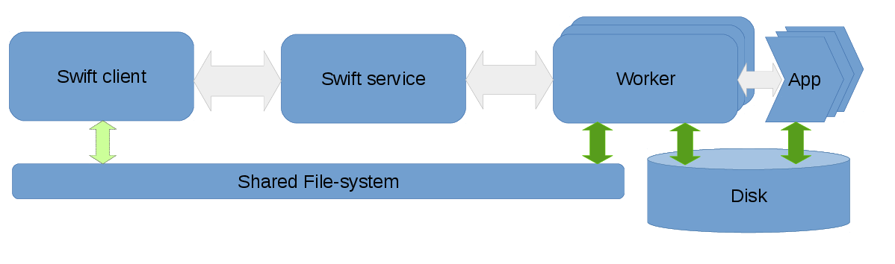
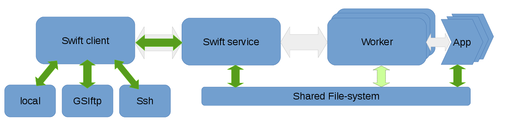
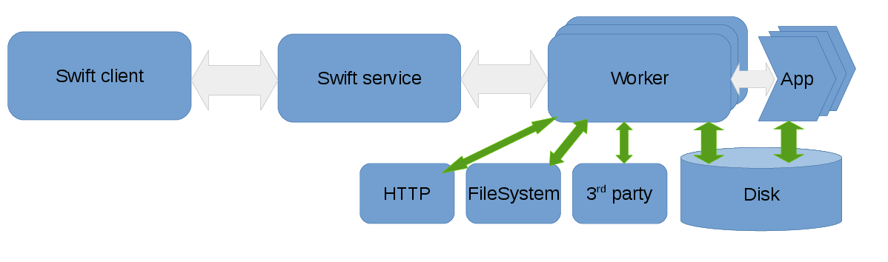

Data flow and staging methods
Overview
The execution components involved in a Swift workflow are the client, the swift service and the workers. The client is the program that executes the workflow described in a swift script and is invoked by the swift command. The service may be started separately or automatically by the swift client and is responsible for provisioning resources from clouds, clusters or HPC systems. The workers are launched by the swift-service and are responsible for controlling the execution of the user’s application on the compute nodes.
Different clusters, HPC systems, and cloud vendors may have shared file-systems, varying network characteristics and local-disks available which can be utilized differently to marshal data efficiently within a workflow. Data flow refers to this movement of data within a workflow. On distributed systems with varying levels of shared resources, the Swift client and service coordinates the flow of data among the worker-nodes such that the data required for computation is available to the worker prior to the execution of the users’s application as well as ensuring that the computed results are captured once tasks run to completion.
There are 6 different staging methods that are supported by Swift. They are:
-
Local
-
Direct
-
Wrapper
-
Swift
-
Shared-fs
-
Service-local
These staging methods are explained in detail in the following sections.
Legend for the following sections: 
Staging method : local
Data flow in local staging: 
Summary
The local staging method is designed for shared-nothing architectures such as clusters and clouds with no shared file-systems. The data originates on the node where the client runs and all data transfers are done explicity over the network. This method avoids using a shared-filesystem to transfer the files over the network, as in many cases the shared-filesystem is a shared among multiple users which adds congestion and it also could just be unsuitable for certain file access patterns. The client and service need not be on the same machine, which allows a client running on a local workstation to channel data through a service on the headnode of a Cluster1 to compute nodes provisioned from Cluster1. The is the default file staging method as this works on all computational resources. Since all the data is transferred via the swift-service the network bandwidth of the service could bottleneck the data flow. Similarly if the swift client is running remotely, the network links between the client and the service could potentially become a bottleneck for large volumes of data.
When to use this mode
The data volumes that need to be transferred to and from the workers to the client per worker are not more that hundreds of MB. As data sizes approach GBs of data per task, other transport mechanisms such as Globus transfers are worth considering.
When each task either consumes or generates a large number of small files, shared-filesystem based copies can be very slow. The local staging method is an ideal candidate for this scenario. However, when there are large number of files involved the filesystem of the system on which the client is executing could become a bottleneck. Using a faster non-disk filesystem when available generally improves performance significantly.
Example configs
sites: midway
site.midway {
execution {
type: "coaster"
URL: "swift.rcc.uchicago.edu"
jobManager: "ssh-cl:slurm" # Client connects remotely to the login node.
options {
nodeGranularity: 1
maxNodesPerJob: 1
jobQueue: "sandyb"
maxJobs: 1
tasksPerNode: 1
maxJobTime: "00:08:20"
}
}
staging: "local"
workDirectory: "/tmp/"${env.USER}
app.date {
executable: "/bin/date"
maxWallTime: "00:05:00"
}
}Analysing logs
TODO
Performance
All data-flow is over the network links from the client node and service node in this staging method and as a result, the network capacity is a potential limiting factor for large data voluems.
When several small files are involved, or with sufficiently large files, the filesystem on the client node can become a bottleneck.
There are performance limitations to the the staging/transport mechanism that swift uses, which could limit transfer throughputs. [TODO: Data to support this would be very nice]
Notes:
When running using local coasters (local instead of ssh-cl), the client and service run on the same node. In this case, the network links are between the service and workers.
Staging method : Direct
Data flow with Direct staging: 
Data flow with Direct staging and a scratch directory: 
Summary
The direct staging mode is designed for computational resources with shared-filesystems. This mode requires that a shared filesystem such as NFS, Lustre, or even FUSE-mounted-S3 is mounted across the nodes where the client, service, and the workers are executing. Instead of Swift managing network transfers, the network transfers are implicitly managed by the shared-filesystem. The apps run in sandbox directories created under the workDirectory, but the tasks themselves will receive absolute paths for the input and output files. For applications that are IO bound, writing directly to the shared-filesystem can adversely affect the shared filesystem performance. To avoid this there is an option to specify a “scratch” folder on a local disk on the compute nodes.
When to use this mode
Large volumes of data are either consumed or generated by the application and a High Performance shared-filesystem is available across the nodes. On systems which have shared-filesystems, with I/O bandwidth that exceeds the network links between the headnode and the worker nodes, using the network to transfer data to the compute nodes could be sub-optimal.
When a high-performance shared filesystem is available, such as the case on many supercomputing systems, there is sufficient I/O bandwidth to support several applications reading and writing to the filesystem in parallel.
Another scenario is when the shared-filesystem is sensitive to creation and deletion of small files and directories. The swift workers create a sandbox directory for each task, which is (3 : TODO:confirm this with Mihael) levels deep. Using the direct mode with the workDirectory on a local disk (say /tmp) could avoid the overhead from swift’s mechanisms for sandboxing tasks.
Example configs
The following is an example for the direct staging mode. * Staging method is set to “direct”. * workDirectory may be set to the shared filesystem or a local filesystem.
In this case, Swift assumes that file variables point at files on the shared filesystem. The apps which are executed on the workers resolve the file variables to absolute paths to the input and output files on the shared-filesystem.
sites: midway
site.midway {
execution {
type: "coaster"
URL: "swift.rcc.uchicago.edu"
jobManager: "local:slurm"
options {
nodeGranularity: 1
maxNodesPerJob: 1
jobQueue: "sandyb"
maxJobs: 1
tasksPerNode: 1
maxJobTime: "00:08:20"
}
}
staging: direct
workDirectory: "/tmp/"${env.USER}"/swiftwork"
app.bash {
executable: "/bin/bash"
maxWallTime: "00:05:00"
}
}The following is an example for the direct staging mode.
-
Staging method is set to “direct”
-
workDirectory may be set to the shared filesystem or a local filesystem.
-
Scratch is set to a directory on the local disks of the workers.
Since the staging method is set to “direct”, swift will assume that file are on a shared file-system. In the context of user-application the file variables will resolve to absolute paths of the input/output files on the scratch directory. Before the workers start the execution of user tasks, the workers will copy the input files from the shared-filesystem to the scratch directory, and after execution will copy out the output files from the scratch directory to the shared-filesystem.
sites: midway
site.midway {
execution {
type: "coaster"
URL: "swift.rcc.uchicago.edu"
jobManager: "local:slurm"
options {
nodeGranularity: 1
maxNodesPerJob: 1
jobQueue: "sandyb"
maxJobs: 1
tasksPerNode: 1
maxJobTime: "00:08:20"
}
}
staging: direct
workDirectory: "/tmp/"${env.USER}"/swiftwork"
scratch: "/scratch/local/"${env.USER}"/work/"
app.bash {
executable: "/bin/bash"
maxWallTime: "00:05:00"
}
}
TCPPortRange: "50000,51000"
lazyErrors: false
executionRetries: 0
keepSiteDir: true
providerStagingPinSwiftFiles: false
alwaysTransferWrapperLog: trueNotes:
TODO : Details of the filename behavior in apps and within swiftscript body.
When this configuration is used, the worker copies the input files from the shared-filesystem to the scratch directory, and the user application will get the path to the file on scratch when the filename(<file_variable>) and it’s shorthand @<file_variable> primitives are used in the app definition. The filename and @ primitives when used outside of the app definitions will point at the files on the shared-filesystem.
Analysing logs
Performance
"Direct" is theoretically the optimal way to use the shared-filesystem. There are no unnecessary copies, and the application that requires the file alone access the data.
If the data access pattern of the application involves random seeks or creation of several intermediate small files, the "scratch" option allows you to offload sub-optimal file access patterns to a local disk/memory. This avoids costly accesses on the shared-filesystem and indirectly the network.
Staging method : Swift
Data flow with staging method Swift: 
Summary
Swift staging, involves the client accessing file over a supported method like ssh or a local-filesystem access, and making the inputs available to the workers over a work-directory on a shared filesystem. This staging method uses an intermediate staging location that is on a shared-FS so each files is, in addition to being read from the initial location, written to and read from a shared FS, both of each are overhead. The only advantage to this is that you don’t need coasters to use it and it’s supported on a large number of computational resources.
This is the default staging mechanism used if no staging method is defined in the swift config file.
When to use this mode
-
You can access data using one of the supported methods like: local filesystem access ssh - Use scp to access files GSIFTP GridFTP
-
A shared-FS is present, that works well for your data access patterns.
-
You want to use a non-coaster execution provider.
The GSIFTP and GridFTP are not actively tested, and are not guaranteed to work.
Example configs
Analysing logs
Performance
The Swift staging method uses an intermediate staging location that is on a shared FS, each files is, in addition to being read from the initial location, written to and read from a shared FS, both of each are overhead. The only advantage to this is that you don’t need coasters to use it and it’s supported in a lot of cases.
Staging method : Wrapper
